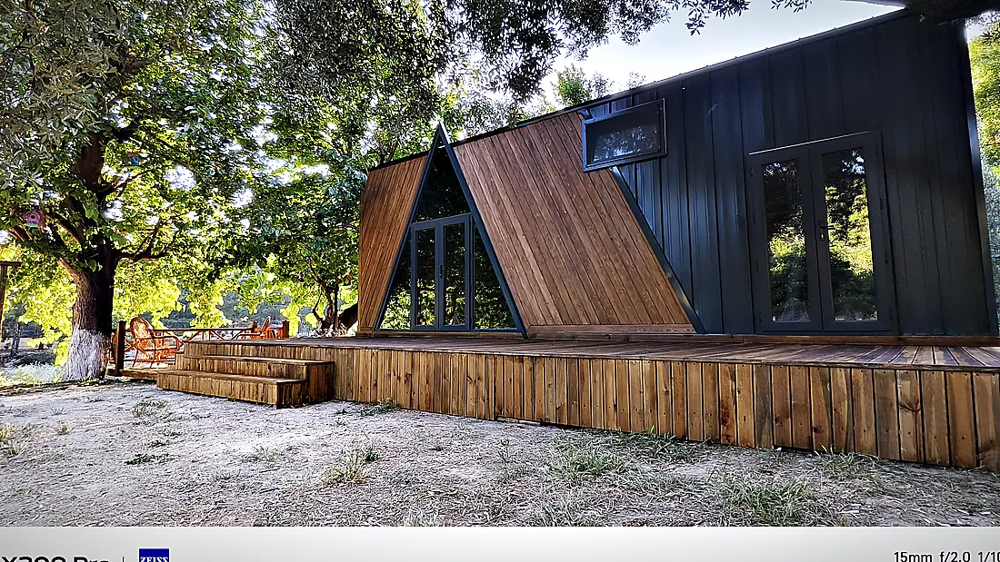

Tiny house in the Eifel
The Eifel is uplands with much space and little pressure: valleys, maars, forest, a national park and several nature parks. Housing projects and eco-villages arise here, campsites and nature hotels extend here — and here the first question is almost always whether the land lies in a protected area.
In the Eifel it is settled first whether a site lies in the national park, a nature park or a protected landscape and what is permitted there. Then planning is for an upland climate: winter with frost, damp valleys, slopes. The town pages lie in Rhineland-Palatinate and North Rhine-Westphalia; the two state pages name the official source.
Protected areas: the first question
Eifel National Park, High Fens–Eifel Nature Park, Vulkaneifel Nature Park, protected landscapes in the valleys: a large part of the Eifel lies in areas where new units are permitted only with restrictions or not at all. Whether a site is affected is for the authority to say, and it says so before the model is chosen. We supply the technical information on the house for that clarification.
Upland climate: frost, damp, slope
The Eifel has winters with frost and valleys where damp sits. A unit lived in permanently here — which is more often the case in the Eifel than on the coast — needs insulation, heating, ventilation and frost-proof water routing for four seasons. Slopes demand placement and access before the model, as in the Black Forest.
Housing projects and villages
Tiny-house villages and eco-villages arise in the Eifel, in which units are lived in permanently and arrive in stages. The operator page for tiny-house villages and eco-villages describes what has to be clarified for that: development plan, operating model, shared services, stages.
What applies under planning law is on the state page, with the official source:
Who typically plans here
Tiny-house village & eco-village
Permanently lived-in units for settlements, villages and community projects.
Rental units on the pitchCampsite & glamping
Rental units that fit the site rules and arrive outside the season.
Rooms outside the houseHotel & nature hotel
Extra rooms in the grounds that match the house and arrive outside the season.
111 places in the Eifel region
Assigned geographically by coordinates and state — an orientation, not an official boundary. The town pages are in German.